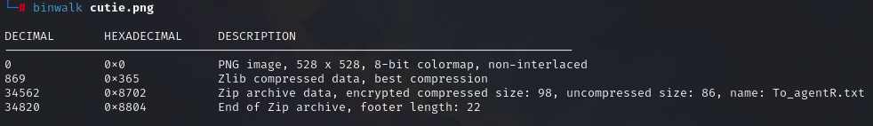
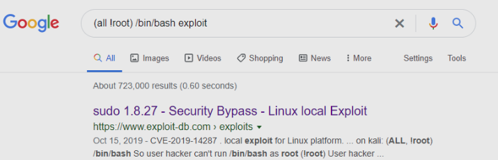

CTF - Agent Sudo - Try Hack Me
Image from THM
Today I am going to walk you through the Agent Sudo Room from TryHackMe.
When I started playing CTF and reading write-ups, I found some of them were not guides but just a collection of answers.
This felt like cheating instead of learning.
This article aims to be a more comprehensive step-by-step guide with explanations to understand the process.
You found a secret server located under the deep sea. Your task is to hack inside the server and reveal the truth.
Author Note
Welcome to another THM exclusive CTF room. Your task is simple, capture the flags just like the other CTF room. Have Fun! If you are stuck inside the black hole, post on the forum or ask in the TryHackMe discord.
Enumeration
Enumerate the machine and get all the important information.
MACHINE IP ➡️ 10.10.232.67
Create the environmental variable for the IP and ping machine.
Nmap Scan:
We discover open ports in 21 (ftp) 22 (ssh) and 80 (http).
While nmap is running, visit the website and seach for robots.txt
http://10.10.232.67
Nice, we now there is an Agent R and something about the user-agent.
http://$ip/robots.txt
Identify Web Technologies with whatweb.
Directory Enumeration with GoBuster.
Going back to the User-Agent, I created a wordlist for Burp, containing only single characters.
0123456789abcdefghijklmnopqrstuvwxyzABCDEFGHIJKLMNOPQRSTUVWXYZ!"#$%&'()*+,-./:;<=>?@[\]^_`{|}~
Open Burp and start intercepting. We will send different petitions with the created list.
Send to Intruder, select the position and the wordlist created before as the payload.
Start the attack üëè. We need to look for the difference in lenght of the response. We know R exists and Burpsuite will demonstrate it.
And we discover there is an agent C
So, let´s send it to Repeater to see the response we get if we change the user-agent We see content is the same, but we receive a new location in the header response.
agent_C_attention.php
Let´s visit that URL
http://10.10.232.67/agent_C_attention.php
agent_C_attention.php
And voilá, we have one name for the user : chris
üí° Answer the questions below
How many open ports? 3
How you redirect yourself to a secret page? user-agent
What is the agent name? chris
Hash Cracking and BruteForce
Done enumerate the machine? Time to brute your way out.
Remember that open FTP port? Let´s go back to that.
Now that we know the user, lets brute force the password with hydra.
And we have the password for user chris
Let´s log into FTP.
Time to download the files to inspect them.
We got the files. Let´s open the text file To_agentJ.txt
So, there is a user starting with J.
Now, open the images
feh cute-alien.jpg
Now let´s analyze the images with binwalk.

Look at that zip
Now that we know that there is something hidden inside the images let´s use steghide. Steghide is a steganography tool that uses a passcode to hide private files within an image or audio file.
If you don´t have it installed type sudo apt install stegcracker
Depending on your machine's velocity and the wordlist, this can take a while.
We have some results in a new file called cute-alien.jpg.out and the password for the zip : Area51
So now we know there is another user called james with the password hackerrules! We will do the same for the other image and extract the contents of the zip. This command must be run as root.
And we get a new directory _cutie.png extracted
Let´s cd there and see what is inside.
That zip looks promising
The zip is password protected, I will use zip2john to hash from the zip then use john to crack it.
And there it is, the password for the zip.
üí° Answer the questions below
FTP password crystal
Zip file password Area51
Who is the other agent (in full name)? james
SSH Password hackerrules!
Capture the User Flag
You know the drill.
We know the user james and his password, so let´s ssh into the machine.
We got the user flag.
Now, let´s download the picture to inspect further.
To view the image I used SCP tool on my local machine to get the image from the SSH server. So I had to exit the remote machine.
Open the image.
I reverse searched the image using TinyEye
And there is what we get after search the image, so we can answer the question below.
üí° Answer the questions below
What is the user flag? b03d975e8c92a7c04146cfa7a5a313c7
What is the incident of the photo called? Roswell Alien Autopsy
Privilege Scalation
Enough with the extraordinary stuff? Time to get real.
We do a simple enumeration with sudo -l to list the commands/files that we can execute without a password and with root privileges, we see /bin/bash but when we try to execute it with sudo it does not work.
We look for a vulnerability for sudo and we see that there is an exploit with which we can obtain superuser access.
It´s recommended that you read the exploit to understand how it works.
Execute the command in james shell and we get root access.
Once we got access to the root shell, look for the root flag.
üí° Answer the questions below
CVE number for the escalation CVE-2019–14287
What is the root flag? b53a02f55b57d4439e3341834d70c062
(Bonus) Who is Agent R? Deskel
Conclusion
Wow, that was a long one, hope u have fun as I did üëΩ